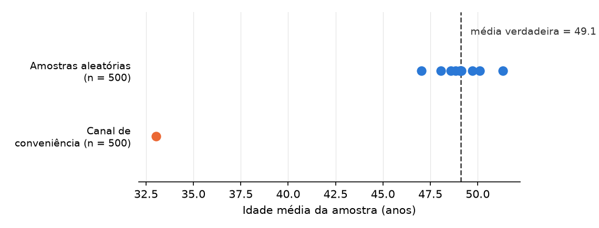

11 Pesquisa Observacional Descritiva
Este capítulo faz parte de um livro em desenvolvimento ativo e ainda não passou pela revisão do autor. O conteúdo pode mudar conforme a revisão avança.

A decisão de pesquisa. Por qual grupo os seus dados observados podem falar honestamente, e onde exatamente cai a linha depois da qual uma descrição da sua amostra não tem mais permissão de virar uma alegação sobre uma população mais ampla. Você traça essa linha, e escreve a frase do outro lado dela que se recusa a dizer.
11.1 Por que essa decisão importa
A decisão em jogo: por qual grupo os seus dados podem falar honestamente.
Imagine uma gestora pública lendo o seu relatório antes de decidir se ele se aplica à cidade dela. A primeira pergunta dela nunca é sobre a sua matemática. É: “Qual grupo o seu procedimento de fato alcançou?” Um resultado que descreve em silêncio um grupo enquanto afirma falar por outro é a falha mais comum no trabalho observacional: uma estimativa precisa, bem formatada e sobre o grupo errado. Este capítulo prepara você para nomear o grupo que os seus dados alcançam, e para recusar a frase que o troca por um grupo que os seus dados nunca tocaram.
11.2 O conceito
Pesquisa observacional descritiva significa que você observa e registra o que está lá sem mudar a experiência de ninguém, e depois resume. Exemplo: você puxa os registros de votação nominal de cada parlamentar de uma casa legislativa e relata com que frequência cada um votou contra o próprio partido. Você nunca atribui um tratamento, então esse caminho consegue descrever e, com cuidado, generalizar, mas não consegue por si só dizer que uma coisa causou outra.
Quatro grupos aninhados mantêm uma descrição dessas honesta. Imagine quatro caixas, cada uma menor que a anterior.
- População-alvo: todo mundo sobre quem a sua pergunta trata. Exemplo: todo cliente que um serviço de streaming algum dia vai cobrar. É a caixa mais externa, o grupo que você gostaria de conseguir estudar.
- População acessível: a parte do alvo que você conseguiria alcançar em princípio, dado tempo e custo. Exemplo: os clientes que você consegue de fato contatar com uma pesquisa neste trimestre.
- Marco amostral: a lista concreta de onde você sorteia. Exemplo: a lista atual de assinantes de onde a sua ferramenta de pesquisa puxa os contatos. O que não está nessa lista não pode ser amostrado.
- Amostra: os clientes que você de fato entrevista. A caixa mais interna.
Uma alegação só é honesta quando a caixa que ela descreve coincide com a caixa que ela nomeia. Dois processos decidem como as caixas diferem. Seleção é qualquer processo que decida quem cai nos seus dados além do puro acaso. Exemplo: uma pesquisa feita na porta de um restaurante universitário seleciona pessoas que almoçam ali. Não resposta são as unidades que você sorteou e que nunca te deram dado. Exemplo: de 500 pessoas contatadas, 300 respondem, e as 200 silenciosas raramente são uma fatia aleatória. Quando qualquer um desses processos se relaciona com a própria coisa que você está medindo, o seu resumo se afasta da verdade, e nenhuma quantidade extra de dados o traz de volta. Tamanho reduz o balanço de uma amostra para outra. Ele não faz nada contra uma inclinação sistemática em quem você alcançou.
11.3 Um exemplo trabalhado
Um serviço de streaming por assinatura mede a sua taxa de erro de cobrança, ou seja, a fração de clientes cuja cobrança mensal sai errada. Exemplo: 2 cobranças erradas em 100 clientes é uma taxa de erro de cobrança de 2%. A equipe de analytics puxa a lista atual de assinantes, manda por e-mail uma pesquisa curta para um sorteio aleatório dessa lista, e conta quantos relatam uma cobrança errada no último ano. A pesquisa aponta 2%, e a manchete se escreve sozinha: “o serviço tem uma taxa de erro de cobrança de 2%.”
Agora percorra as caixas. A população-alvo é todo cliente que o serviço cobra. O marco amostral é a lista atual de assinantes, porque só quem está nessa lista recebe a pesquisa. Aqui está a armadilha: os clientes mais atingidos por erros de cobrança, os que foram cobrados duas vezes ou cobrados depois de cancelar, são também os que mais provavelmente saíram do serviço de tanta frustração. Eles se removeram do marco antes de qualquer um entrevistá-los. Isso é seleção por sobrevivência, um filtro que mantém exatamente as pessoas menos propensas a mostrar o problema que você está contando. Assinantes atuais são a ponta contente da base de clientes, não uma fatia justa dela.
Então os 2% são honestos sobre uma caixa e desonestos sobre outra. A alegação autorizada é: “entre os clientes ainda assinantes, a taxa de erro de cobrança é de 2%.” O upgrade silencioso, a frase a recusar, é: “a taxa de erro de cobrança do serviço é de 2%.” A taxa verdadeira entre todos os cobrados é quase certamente mais alta, porque os clientes mais atingidos já tinham ido embora quando a pesquisa saiu. Essa distância entre a caixa que você mediu e a caixa que você nomeou é o assunto deste capítulo.
11.4 Uma simulação com semente
O exemplo trabalhado argumenta que quem você alcança inclina o que você mede, e que uma amostra maior não conserta a inclinação. Você pode ver isso acontecer. Uma semente (seed) é um ponto de partida fixo para o gerador de números aleatórios: a mesma semente sempre reproduz os mesmos sorteios, então a figura abaixo é exatamente o que você vai obter ao rodar este código no notebook companheiro. O código constrói uma população de 100.000 pessoas cuja idade média verdadeira é conhecida por construção, sorteia dez amostras aleatórias honestas de 500, e depois sorteia uma amostra de conveniência do mesmo tamanho por um canal que alcança principalmente pessoas mais jovens.
import numpy as np
import matplotlib.pyplot as plt
SEED = 464
rng = np.random.default_rng(SEED)
populacao = np.clip(rng.normal(49, 17, size=100_000), 18, 90)
verdade = populacao.mean()
medias_aleatorias = [rng.choice(populacao, 500, replace=False).mean()
for _ in range(10)]
pesos = np.exp(-(populacao - 25) ** 2 / (2 * 12 ** 2)) # jovem = mais provável
conveniencia = rng.choice(populacao, 500, replace=False,
p=pesos / pesos.sum())
fig, ax = plt.subplots(figsize=(7.6, 2.9))
ax.scatter(medias_aleatorias, np.ones(10), s=60, color="#2a78d6", zorder=3)
ax.scatter([conveniencia.mean()], [0], s=60, color="#eb6834", zorder=3)
ax.axvline(verdade, color="#333333", ls="--", lw=1.2)
ax.text(verdade + .5, 1.55, f"média verdadeira = {verdade:.1f}",
color="#333333", fontsize=9)
ax.set_yticks([0, 1], ["Canal de\nconveniência (n = 500)",
"Amostras aleatórias\n(n = 500)"], fontsize=9)
ax.set_xlabel("Idade média da amostra (anos)")
ax.set_ylim(-.7, 1.9)
plt.show()
Leia a figura como uma revisora leria. As dez amostras aleatórias nunca concordam exatamente: as médias se espalham entre cerca de 47 e 51. Mas elas se aglomeram em torno da verdade, e esse espalhamento é incerteza honesta e quantificável. O canal de conveniência tem exatamente o mesmo tamanho de amostra, e erra a média verdadeira por cerca de dezesseis anos. Nada no ponto em si avisa você; ele parece tão confiante quanto qualquer outro. Só o procedimento de amostragem diz que tipo de ponto você tem. No notebook companheiro, mova o centro do canal (o 25 dentro de pesos) e rode de novo: a inclinação segue o canal, nunca o tamanho da amostra.
11.5 O laboratório em Colab
Este capítulo tem o seu próprio notebook companheiro — abra-o no Colab pelo selo acima. O notebook reúne os prompts e o código do capítulo e termina com o espaço de trabalho Agora é a sua vez, para você completar a etapa do capítulo no seu projeto sem sair do Colab. O laboratório completo de sala de aula por trás deste capítulo é o notebook do curso nb05 — Observational descriptive research (abrir no Colab), parte do curso companheiro apresentado no apêndice Para instrutores. No laboratório você trata um cadastro real de eleitores como um mundo conhecido, sorteia amostras aleatórias e um canal de conveniência a partir dele, e vê os sorteios aleatórios se aglomerarem em torno da verdade enquanto o canal de conveniência erra a idade média verdadeira por quase doze anos. Depois você roda um teste de estresse de não resposta que mostra uma estimativa limpa se afastando da verdade.
11.6 Prompts de IA recomendados
Comprometa-se com a sua própria resposta primeiro, depois delegue. Cada prompt abaixo deixa o julgamento com você e entrega à IA apenas o trabalho de perna. Trabalhe-os como um loop, não como tiro único: a primeira lista de grupos que ficam de fora é sempre a óbvia, e a resposta útil costuma chegar na segunda ou terceira passagem, depois que você disse à ferramenta qual grupo ela esqueceu e pediu que tentasse de novo com isso em mente.
Localizar. Encontre respaldo metodológico real em vez de confiar em um parágrafo.
Act as a research-methods assistant. List real, retrievable references on
survivorship and nonresponse bias in observational studies. For each, give
title, authors, year, and venue, and mark any you are not confident exist.Depois de rodar, verifique abrindo cada fonte em uma base de dados de biblioteca antes de citá-la. Isso enfrenta a fabricação confiante: uma citação fluente para um artigo que não existe é idêntica a uma real até você tentar recuperá-la.
Listar para verificar. Transforme uma preocupação vaga em uma lista checável de quem fica de fora.
I am drawing a selection diagram for an observational study. My target
population is [X], my frame is [Y], my sample is [Z]. List each group that
drops out between target and sample, in a table, with whether their absence
pushes my estimate up or down.Depois de rodar, verifique mapeando cada grupo nomeado para um passo real do seu próprio diagrama, e conferindo que o grupo que você mais temia está na lista. Isso enfrenta a ilusão de completude: uma lista longa e bem arrumada que omite em silêncio justamente o grupo que mais importa.
Red team. Faça a IA atacar a sua frase de fronteira em vez de elogiá-la.
Here is a boundary sentence I wrote: "[your sentence]". Act as a hostile peer
reviewer. Name every place it over-reaches, under-states the bias, or hides the
direction of the drift. Do not rewrite it for me.Depois de rodar, verifique conferindo cada objeção contra os seus próprios números e insistindo se todas as objeções forem brandas. Isso enfrenta a concordância bajuladora: uma IA que chama a sua ressalva de “bem equilibrada” revisou o seu ego, não a sua evidência.
Três decisões continuam só suas. Primeira, sobre qual população o seu projeto realmente trata: a IA não conhece a intenção da sua pergunta. Segunda, qual marco amostral você consegue honestamente alcançar, e portanto a lacuna de cobertura que você precisa revelar. Terceira, a própria linha de fronteira: a frase exata em que a sua descrição para e a alegação populacional que você se recusa a fazer. Você pode pedir a uma IA que ataque essa linha, nunca que a trace por você.
11.7 Um caso de falha da IA
Você pergunta a um chatbot: “Minha pesquisa com assinantes atuais mostra uma taxa de erro de cobrança de 2% em um painel grande. Posso relatar a taxa de erro de cobrança do serviço como 2%?” Ele responde com total confiança: “Sim. Com uma amostra desse tamanho, a sua estimativa é precisa e confiável.” Isso está errado de duas maneiras nomeadas ao mesmo tempo. Ele comete uma mudança silenciosa de escopo, promovendo em silêncio “assinantes atuais” a “os clientes do serviço”, e se apoia na falácia de que uma amostra grande cura uma amostra inclinada.
Você pega isso porque escreveu a sua própria resposta primeiro, e a sua nomeava o marco: os clientes ainda assinantes, não todo mundo que o serviço cobra, então a troca fica visível de cara. Depois você confere o mecanismo contra os dados. Os clientes com os piores erros de cobrança cancelaram antes de a pesquisa sair, então a ausência de dados se relaciona diretamente com o desfecho que você conta. Um painel maior de assinantes atuais só estima com mais precisão a taxa de erro dos assinantes atuais. Ele nunca alcança as pessoas que foram embora.
11.8 Agora é a sua vez
Você chega com um desenho de pesquisa declarado e diagnosticado. Este é o primeiro dos capítulos de caminho, então o seu trabalho agora é ou desenvolver o seu desenho neste caminho, ou usá-lo para testar sob estresse o caminho que você escolheu.
- Decida em qual caso você está. Leia as palavras da sua indagação. Se ela pergunta quanto, quantos, com que frequência, sobre um grupo que você vai observar em vez de atribuir, este é o seu caminho. Se ela pergunta por quê ou o que aconteceria se, não é, e você faz o exercício do passo 5 no lugar.
- Se este é o seu caminho, escreva as suas quatro caixas, uma linha cada: população-alvo, população acessível, marco amostral, amostra. Seja concreto sobre o marco. Nomeie a lista, o banco de dados ou o feed de onde os seus dados vão vir.
- Desenhe o seu diagrama de seleção: uma seta de cada caixa para a seguinte, com o filtro que remove pessoas escrito sobre a seta. Circule o filtro que você mais teme que curve tanto quem você alcança quanto o que você mede. É esse que você vai ter de revelar.
- Escreva as duas frases que definem a sua alegação. A primeira é a alegação populacional que o seu marco de fato autoriza, enunciada com a sua incerteza. A segunda é o upgrade silencioso que o seu desenho proíbe, escrito por extenso para que você o reconheça e o recuse quando um coautor ou uma IA o devolver a você.
- Se este não é o seu caminho, faça o exercício de classificação. Escreva a sua pergunta como se fosse uma pergunta observacional descritiva, nomeie as quatro caixas de que ela precisaria, e diga precisamente o que essa versão não conseguiria te dizer. A frase que você não consegue escrever aqui é a razão pela qual o caminho que você escolheu tem de merecer as suposições extras dele.
- Registre o trabalho no seu AI Research Ledger (registro de pesquisa com IA), e verifique a alegação-chave com um método nomeado do Guia de Verificação; a simulação se encaixa aqui, porque a alegação é sobre como um procedimento de amostragem se comporta, e não sobre um número fixo. Um revisor de IA pode atacar a sua frase de fronteira junto com você; a decisão de manter a linha ou movê-la continua sendo sua.